55 Macromolecular Tissue Volume and the g-ratio
Suggestions of all kinds for these lecture notes are welcome — whether it’s fixing small errors, raising bigger questions, or offering new perspectives. Please share comments through GitHub Issues. To make feedback easier to address, please point to the section you have in mind — by section number or a short snippet of text.
This chapter develops two related quantitative measures of white-matter tissue. Macromolecular tissue volume (MTV) estimates the fraction of a voxel that is not water — the space taken up by myelin, membranes, and other macromolecules. The g-ratio combines a myelin estimate with an axon estimate to report a geometric property of the fiber that governs conduction speed. Both build on the quantitative T1 and proton-density mapping introduced earlier, and both require careful removal of the coil-related intensity bias that contaminates raw MR images.
55.1 Macromolecular tissue volume
The motivation for MTV is microstructural. A very small part of a white-matter voxel contains axons wrapped in many layers of myelin, and each myelin membrane is a lipid bilayer surrounded by water (Figure 55.1). The more myelin and other macromolecular material a voxel contains, the less room is left for water. If we can measure the water fraction accurately, then one minus that fraction — the macromolecular tissue volume — is a measure of tissue content.
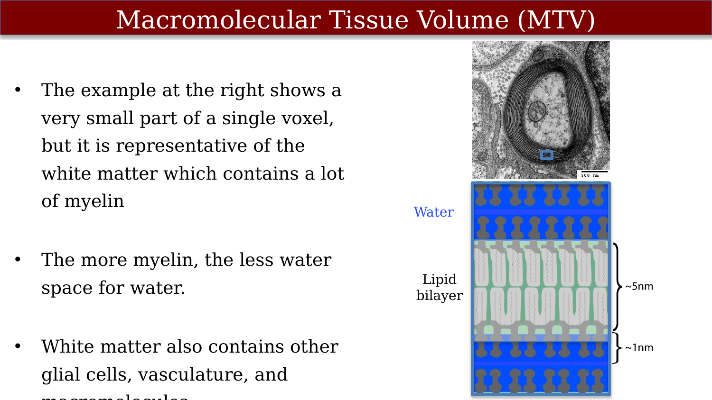
The water fraction is estimated from proton density (PD), and here the practical difficulty appears. Raw scanner images are not quantitative: their brightness falls off systematically from the center to the edge because of the receive coil’s spatially varying sensitivity (Figure 55.2). Recovering a true PD map means separating this coil gain from the tissue signal, not merely cosmetically flattening the image.
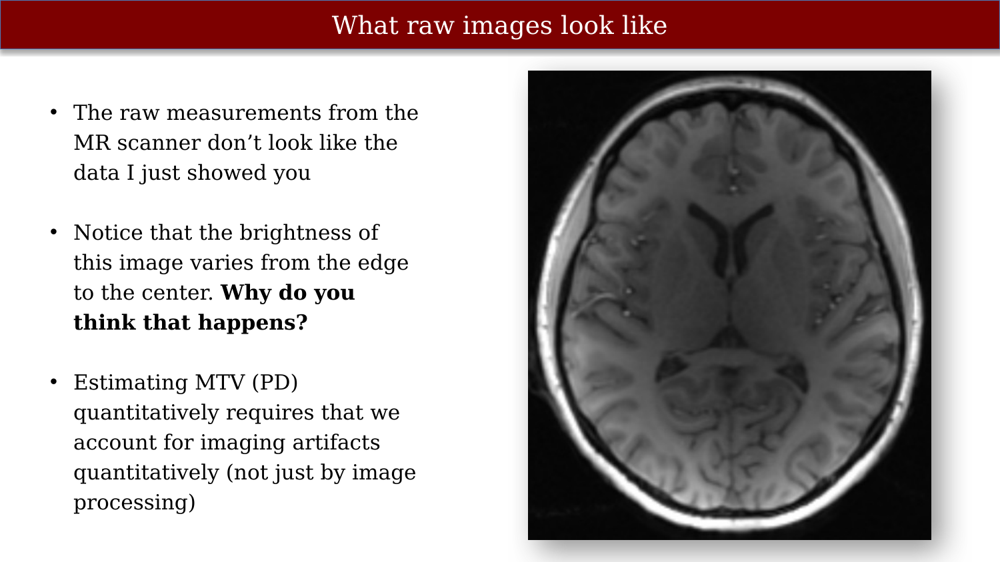
The starting point is quantitative T1 mapping. A single T1-weighted image confounds the tissue’s T1 with the scan parameters and coil gain; acquiring several images at different flip angles and fitting the spoiled gradient-echo signal equation separates these factors, yielding clean T1 and PD (M0) maps (Figure 55.3). The image intensity can be written schematically as a function of coil gain, scan parameters, and tissue properties, and the fit disentangles them.
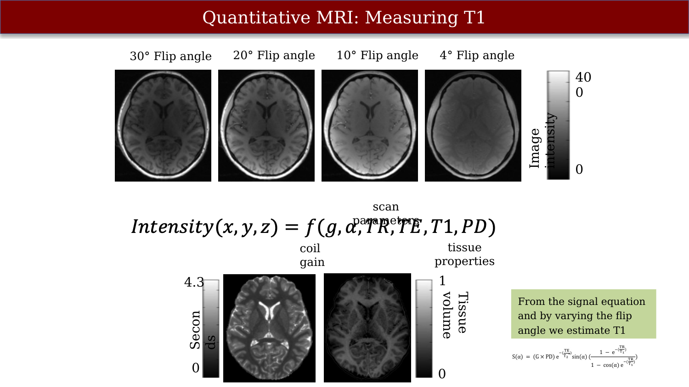
Estimating PD from the data is an ill-posed problem, and it is instructive to see why. In simulation without noise the coil sensitivity and PD can be recovered perfectly; add realistic noise and the estimates degrade badly, because a flexible model fits the noise rather than the signal, and the cross-validation accuracy collapses (Figure 55.4). The remedy is regularization: adding a constraint from something else we know to be true. Here the useful prior is the physical relationship between T1 and PD, which lets a biophysically regularized fit recover accurate PD maps.
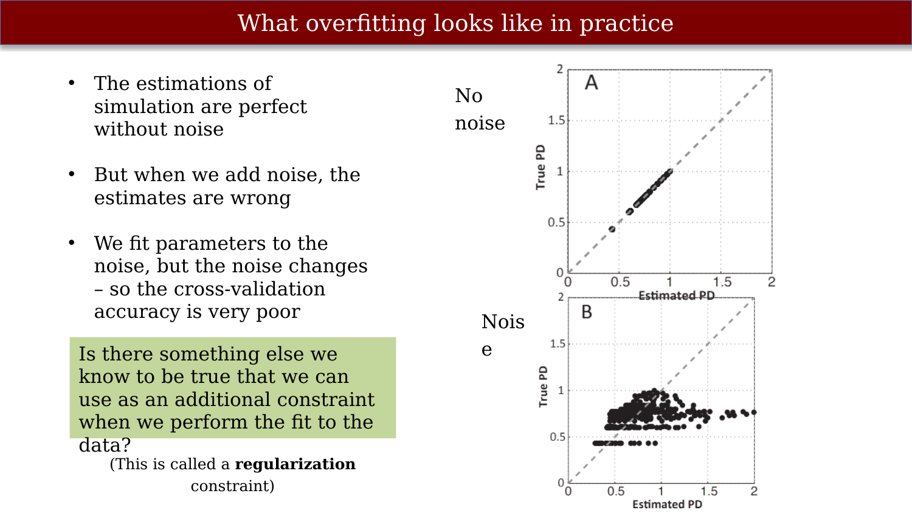
Is the resulting MTV a genuine measure of tissue volume, independent of the particular chemistry? A calibration experiment says largely yes. Working with the chemistry department to build lipid phantoms — with and without inserted cholesterol — the measured lipid volume tracks the calculated lipid volume along the line of identity regardless of whether cholesterol is present (Figure 55.5). MTV measures how much space the macromolecules occupy, not what they are made of.
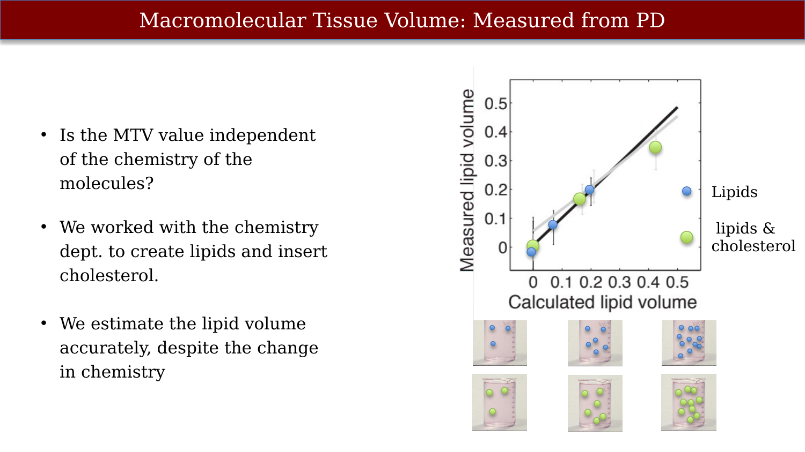
Chemistry does leave a separate signature, however, in how strongly the water interacts with the macromolecular surfaces. The same tissue volume can produce a different surface-interaction rate. Defining the volume of interacting protons as \(VIP = (T1_m - T1_f)/(T1_c - T1_f)\) — where \(T1_m\) is the measured T1, \(T1_f\) the T1 of free water, and \(T1_c\) a calibration value — and the surface interaction rate as \(SIR = VIP/MTV\), cholesterol-containing samples show a higher interaction rate at the same lipid volume (Figure 55.6). MTV and SIR are complementary: one reports how much material is present, the other reports something about its surface chemistry.
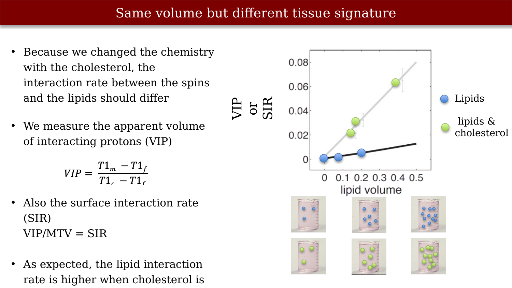
55.1.1 Why not just use diffusion?
The usual way to characterize white matter is diffusion imaging, but FA is not a clean measure of tissue content. FA varies enormously along a single tract, and the largest swings come from geometry — crossing fibers — rather than from myelin. Where callosal fibers cross the corticospinal tract, FA drops sharply, and the rank ordering of subjects changes from place to place along the tract (Figure 55.7). MTV is attractive precisely because it responds to tissue content more directly than FA does.
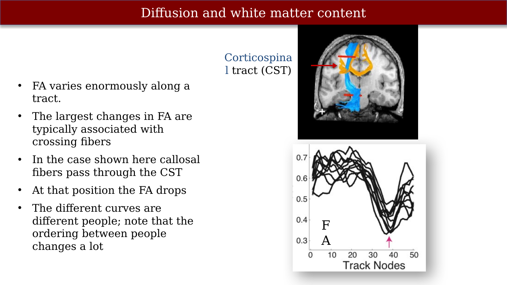
Combining a tract model with quantitative maps gives tract profiles that can be compared against a normative range. In multiple sclerosis patients, the macromolecular tissue volume fraction (MTVF) along the corticospinal tract falls below the control distribution at specific locations, and the diffusion and FA profiles add complementary information about disease stage (Figure 55.8).
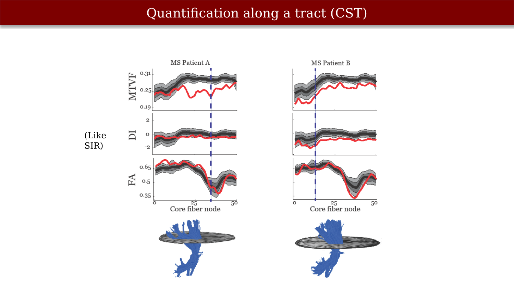
55.2 The g-ratio
Myelin does two things for an axon: it speeds conduction and it lowers the energy cost of signaling. Conduction velocity rises with fiber caliber, but only for myelinated axons — the unmyelinated curve stays low across the whole range of diameters (Figure 55.9). The precise speed depends on how much myelin wraps a given axon.
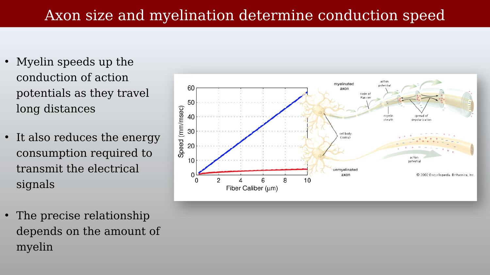
The amount of myelin is not arbitrary: across axons there is a consistent relationship between myelin thickness and axon perimeter, so larger axons carry proportionally thicker sheaths (Figure 55.10). This regularity is captured by a single number, the g-ratio.
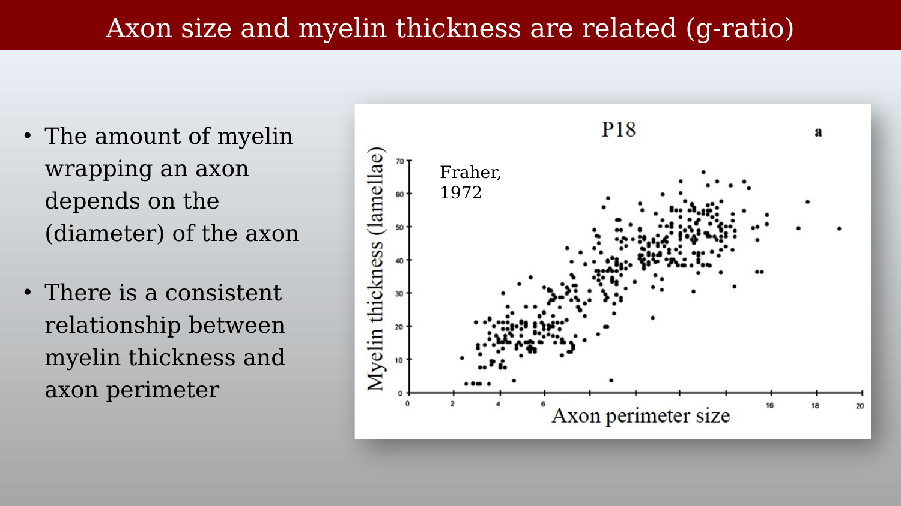
The g-ratio is the ratio of the inner (axon) to the outer (axon + myelin) diameter of a myelinated fiber (Figure 55.11). It matters because it sets the balance between conduction speed and the metabolic and spatial cost of myelin. It can be estimated from MRI by combining a myelin volume fraction (MVF) and an axon volume fraction (AVF): \(g = \sqrt{1/(1 + MVF/AVF)}\). In practice MVF comes from a myelin-sensitive measurement such as MTV or magnetization transfer, and AVF comes from a diffusion model that estimates the intra-axonal water fraction.
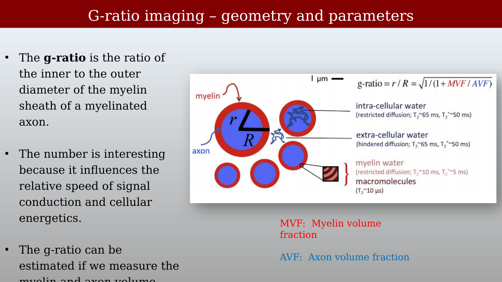
Putting these ingredients together yields whole-brain g-ratio maps from multi-shell diffusion plus a myelin measurement: separate MVF and AVF maps combine into a g-ratio map that is relatively uniform across healthy white matter (Figure 55.12). The clinical interest is that the g-ratio can distinguish kinds of tissue damage. In multiple sclerosis, lesions are hyperintense on FLAIR and reduced on both the MVF and AVF maps, but the g-ratio map — being a ratio — separates lesions in which myelin and axons are lost proportionally (g-ratio near normal) from the occasional lesion with disproportionate myelin loss (elevated g-ratio) (Figure 55.13).
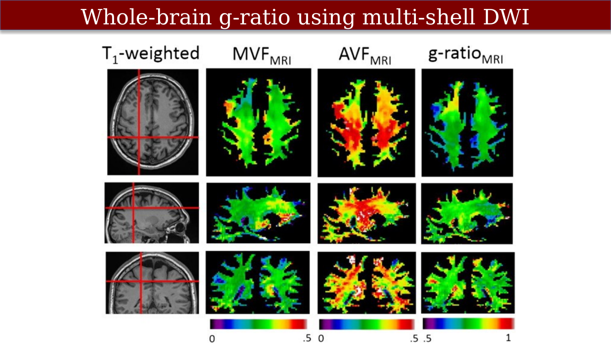
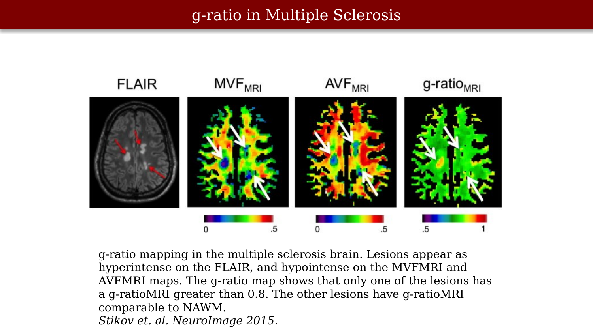